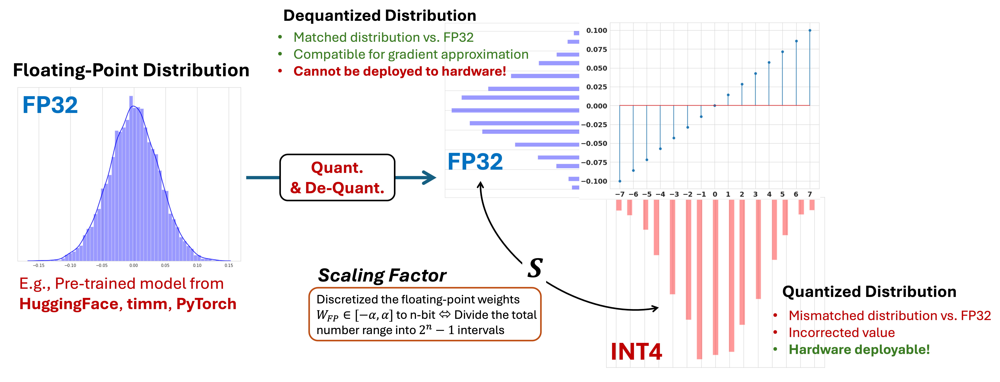

DNN Compression
Driven by the desire of energy-efficient DNN computation, compression aims to either reduce the precision of the model representation (quantization) or remove the redundant paramters from the model itself (pruning). In Torch2Chip, we support the collective compression with both low precision quantization and sparsity.
Quantization
Quantization has been one of the most dominant methods for model compression. Essentially, quantization can be considered as a process of aligning the original floating-point distribution with a pre-defined "grid" with different data precisions (e.g., INTX, FPX).
Low Precision Integer Quantization
The integer-only quantization can be generalized as:
Where \(S_x\) represents the scaling factor of the quantization.
In practice, the quantization process is implemented as:
Where scale is defined by the range of the floating point distribution (clipped or non-clipped) and the target data precision n.

Scaling factor: Size of the interval
Scaling factor defines the interval between two adjacent levels after dequantization. Naturally, given the distribution with the floating point range = \([\alpha, \beta]\) and precision \(n\), the scaling factor is defined as:
Naturally, it is easy to tell that the total number of "intervals" after quantization is \(2^n-1\), defined by the lower bound and upper bound of the quantization range (not floating point range), which is also characterized by the "signed" and "unsigned" data format.
- Signed integer: Upper bound
qub= \(2^{n-1}-1\) ; Lower boundqlb= \(-2^{n-1}\) - Unsigned integer: Upper bound
qub= \(2^n-1\); Lower boundqlb= 0.
Both signed and unsigned integer leads to the total number of intervals = \(2^n-1\).
Zero Point: Distribution Shifter
In practice, the data range of the floating point distribution could be mismatched with the quantization range of the target data format (signed or unsigned). As a result, an offset is needed to correct the range of distribution.
Specifically, zero point is computed as the difference between the rounded floating point range and target lower bound of quantization:
Where self.lb , self.qlb represents the low bound of the original distribution (high precision) and the lower bound of quantization range.
In Torch2Chip, scaling factors and zero point are defined as the basic "quantization parameters" (qparams), which will be registered directly under the _QBase :
def register_qparams(self):
# register quantization scaler and zero point
self.register_buffer("scale", torch.tensor(1.0))
self.register_buffer("zero_point", torch.tensor(0.0))
Overall, the quantization process is summarized as:
xr = torch.round(x / self.scale) + self.zero_point
xq = torch.clamp(xr, min=self.qlb, max=self.qub)
xq = xq.sub(self.zero_point)
# dequantize
if self.dequantize:
xdq = xdq.mul(self.scale)
Observers
In Torch2Chip, the statistics (e.g., lower bound, upper bound) of the incoming tensor is captured by different observers, corresponding to different quantization method proposed by the prior research works. Starting from the base quantizer (_QBase), the observer is a necessary part of the quantization process.
BaseObserver [Source]
Attributes:
nbit: Target precision of quantization.unsigned: Target data type (signed or unsigned integer).initialize: Initialization flag.
register_range(self)
Register the buffer to record the numerical range in the high-precision floating point domain.
self.lb: Lower bound of the floating point distribution (default =torch.tensor("-inf"))self.ub: Upper bound of the floating point distribution (default =torch.tensor("inf")).
calculate_qparam(self, x:torch.Tensor)
Calculate the quantization parameters (scaling factor and zero point) based on the updated upper and lower bound.
Output:
Calculated quantization parameter
BaseChannelWiseObserver [Source]
Inherited from BaseObserver, the channel-wise observer capture the numerical range along the channels of weight tensor.
-
num_channels: Number of channels of a given layer, defined at the begining of compression. -
self.lb: Lower bound of the floating point tensor (shape =self.num_channels). self.ub: Upper bound of the floating point tensor (shape =self.num_channels).
BaseTokenWiseObserver [Source]
Inherited from BaseObserver, the token-wise observer capture the numerical range along the token dimension of the weight tensor.
-
num_tokens: Number of tokens of a given model, defined at the begining of compression. -
self.lb: Lower bound of the floating point tensor (shape =self.num_tokens). self.ub: Upper bound of the floating point tensor (shape =self.num_tokens).
Convert Faked Quantized Ops to Low-precision Ops
By default, the quantized tensor \(X_Q\) requires dequantization during training (PTQ, QAT) to ensure the numerical stability: $$ X_{DQ} = S_X(X_Q - \text{zero point}) $$ Given the weight tensor \(X^L\) and weight tensor \(W^L\) of layer \(L\), the dequantize process can be factorized out: $$ Y = S_WS_X(X_Q \cdot W_Q) $$ For simplicity, we assume the zero point = 0. By doing so, the operation (e.g., MatMul, Convolution) between \(X_Q, W_Q\) is compressed.
In practice, the accuracy-driven quantization requires different granularity schemes for weight and activation. Therefore, the fusion of the scaling factors should be individually treated for different schemes (ViT Example).
Quantization Methods
The objective of Torch2Chip is enabling the systematic design of compression. Starting from customized compression algorithm, all the way to the fully quantized and observable tensors (intermediate results).
In terms of customization, Torch2Chip support recent state-of-the-art (SoTA) quantization algorithms, together with different quantization granularities (tensor-wise, token-wise, channel-wise).
- Note: We are continously adding different quantization algorithms into Torch2Chip!
In Torch2Chip, all the quantization methods follows the structure of 1) Quantizer (inherited from _QBase), 2) Observer (_BaseObserver), and 3) Properly calculated and stored quantization parameters (qparams).
MinMax Quantization
Simplest quantization strategy which takes the minimal and maximal value of the distribution as the upper bound of lower bound of quantization.
MinMaxQuantizer [Source]
class MinMaxQuantizer(_QBase):
def __init__(self, nbit: int, train_flag: bool = True, unsigned: bool = True):
super().__init__(nbit, train_flag, unsigned)
# observer
self.observer = MinMaxObserver(nbit=self.nbit, unsigned=self.unsigned)
Tensor-wise quantizer with single scaling factor and zero point, which are computed by observing the minimal and maximal bound of the incoming distribution (e.g., weight. activation).
MinMaxChannelWiseWeightQuantizer [Source]
class MinMaxChannelWiseWeightQuantizer(MinMaxQuantizer):
def __init__(self, nbit: int, train_flag: bool = True, unsigned: bool = False, num_channels:int = 1):
self.num_channels = num_channels
super().__init__(nbit, train_flag, unsigned)
# observer
self.observer = MinMaxChannelWiseWeightObserver(nbit=self.nbit, unsigned=unsigned)
# qparams
self.register_qparams()
Channel-wise quantizer for weight tensors. The observer (MinMaxChannelWiseWeightObserver) and quantization parameters (scale and zero_point) are designed to match the channel-dimension of the incoming tensor, for both convolutional neural network and transformer architectures.
MinMaxTokenWiseQuantizer [Source]
class MinMaxTokenWiseQuantizer(MinMaxQuantizer):
def __init__(self, nbit: int, train_flag: bool = True, unsigned: bool = True, num_tokens: int = 197):
self.num_tokens = num_tokens
super().__init__(nbit, train_flag, unsigned)
# observer
self.observer = MinMaxTokenWiseObserver(nbit=self.nbit, unsigned=self.unsigned, num_tokens=num_tokens)
# qparams
self.register_qparams()
Token-wise quantizer for activation tensors. The observer (MinMaxChannelMinMaxTokenWiseObserver) and quantization parameters (scale and zero_point) are designed to match the token-dimension of the incoming tensor, for transformer architecture only.
MinMaxObserver [Source]
class MinMaxObserver(BaseObserver):
def __init__(self, nbit: int, unsigned: bool = True):
super().__init__(nbit, unsigned)
Tensor-wise Observer. Track the minimal and maximal value of the incoming tensor (for weight or activation) in the forward pass. Given the total number of calibration samples = \(N\), MinMaxObserver continously update the upper bound and lower bound of the quantization range (lb and ub).
lb = torch.min(self.lb, min_val)
ub = torch.max(self.ub, max_val)
# update bound
self.lb.copy_(lb)
self.ub.copy_(ub)
Note: The quantization parameters of MinMaxQuantizer and MinMaxObserver will remain fixed during the post-quantization inference. Dynamically calculating the quantization parameter on the fly leads to the repetitive sorting and hardware overhead.
MinMaxChannelWiseWeightObserver [Source]
class MinMaxChannelWiseWeightObserver(BaseChannelWiseObserver):
def __init__(self, nbit: int, unsigned: bool = True, num_channels:int=1):
super().__init__(nbit, unsigned, num_channels)
Channel-wise observer for weight tensors. Generating the channel-wise quantization boundaries (lb and ub), observing the channel-wise minimal and maximal value and further calculate the channel-wise scaling factor (scale) and zero point (zero_point).
Attributes / Methods:
num_channels: Number of channels of the weight tensor.reshape(self): Reshape the incoming tensor to isolate the channel dimension (for CNN or transformers).
MinMaxTokenWiseObserver [Source]
Token-wise observer for activation tensors. Generating the channel-wise quantization boundaries (lb and ub), observing the channel-wise minimal and maximal value and further calculate the token-wise scaling factor (scale) and zero point (zero_point).
Learned Step Size Quantization (LSQ) [Reference]
Learned step size quantizer considers the scaling factor of quantization as a learnable parameter (torch.nn.Parameter).
LSQ [Source]
class LSQ(_QBase):
def __init__(self, nbit: int = 8, train_flag: bool = True, unsigned: bool = True):
super().__init__(nbit, train_flag, unsigned)
self.train_flag = train_flag
self.unsigned = unsigned
# initialization flag
self.initialize = False
# observer
self.observer = LSQObserver(nbit=self.nbit, unsigned=self.unsigned)
# register q parameters
self.register_qparams()
Tensor-wise quantizer that optimizes the learnable scaling factor (delta) throughout the layer-wise calibration process.
Attributes:
register_qparams(self): Together with the quantization parameters, the learnable scaling factordeltais registered as an trainabletorch.nn.Parameter:
initialize: Flag controls the initialization of the learnable scaling factor (default = False).
Note: LSQ is designed for low precision quantization for the activation tensors.
LSQTokenWise [Source]
class LSQTokenWise(LSQ):
def __init__(self, nbit: int = 8, train_flag: bool = True, unsigned: bool = True, num_tokens: int = 197):
self.num_tokens = num_tokens
super().__init__(nbit, train_flag, unsigned)
self.observer = LSQTokenWiseObserver(nbit=self.nbit, unsigned=self.unsigned)
# register q parameters
self.register_qparams()
Token-wise quantizer for activation tensors. The learnable step size (delta) is initialized as a 1-dimensional tensor with the size = total number of tokens for each inference. Given the requirement of the fixed token size, LSQTokenWise quantizer is suitable for vision transformer or single pass LLM inference with fixed sequence length, e.g., 197 or 2048, respectively.
LSQObserver [Source]
class LSQObserver(BaseObserver):
def __init__(self, nbit: int, unsigned: bool = True):
super().__init__(nbit, unsigned)
Tensor-wise observer for activation tensors. LSQObserver allocates the best initial values before the PTQ training starts.
quantize: One shot quantization with the given candidate scaling factor and zero point.calculate_qparam: Find the optimal value of scaling factor by gradually reduce the candidate scaling factor:
LSQTokenWiseObserver [Source]
class LSQTokenWiseObserver(BaseTokenWiseObserver):
def __init__(self, nbit: int, unsigned: bool = True, num_tokens: int = 197):
super().__init__(nbit, unsigned, num_tokens)
Token-wise observer which initialize the token-wise scaling factor with the best candidate and lowest quantization error.
Adaptive Rounding [Reference]
Weight quantization method with learnable and adaptive rouding intervals.
AdaRound [Source]
class AdaRound(_QBase):
def __init__(self, nbit: int, train_flag: bool = True, weights: torch.Tensor=None, unsigned=False):
super().__init__(nbit, train_flag, unsigned)
self.iter = 0
# initialize the alpha
self.init_flag = True
# parameters
self.gamma, self.zeta = -0.1, 1.1
self.beta = 2/3
# define the observer
self.observer = AdaRoundObserver(nbit=self.nbit, unsigned=self.unsigned)
# register the learnable parameters
self.register_alpha(weights)
Tensor-wise weight quantizer with element-wise trainable interval (alpha), which determines the rounding direction of each single weight element.
Attributes and Methods:
register_alpha: Register the element-wise rounding offset.
To ensure the differentiability, the training path trainFunc performs the soft rounding on the weight tensor. While in the inference path evalFunc, the offset has been rounded to either 0 or 1, indicating the direction of "round up" or "stay at current value".
soft_shift = self.h()
if self.train_flag or self.training:
xada = xfloor + soft_shift
else:
xada = xfloor + self.alpha.ge(0.0).float()
xq = xada + self.zero_point
# integer representation
output = torch.clamp(xq, self.observer.qlb, self.observer.qub).sub(self.zero_point)
QDrop [Reference]
Randomly disable the quantization and partially activate the full-precision operation during post-training quantization calibration, designed for activation quantization.
QDrop is inherited from LSQ, while introducing a drop out probability (default = 0.5).
QDrop [Source]
class QDrop(LSQ):
def __init__(self, nbit: int = 8, train_flag: bool = True, unsigned: bool = True, drop_prob:float=0.5):
super().__init__(nbit, train_flag, unsigned)
self.drop_prob = drop_prob
Attributes:
drop_prob: Drop out probability, randomly replace (mask) the quantized tensor by the original full precision elements.
QDropTokenWise [Source]
Token-wise quantizer based on QDrop algorithm, inherited from LSQTokenWise.
class QDropTokenWise(LSQTokenWise):
def __init__(self, nbit: int = 8, train_flag: bool = True, unsigned: bool = True, drop_prob:float=0.5):
super().__init__(nbit, train_flag, unsigned)
self.drop_prob=0.5
Attributes:
drop_prob: Drop out probability, randomly replace (mask) the quantized tensor by the original full precision elements.
SmoothQuant [Reference]
Collective quantizer for both weight and activation, designed for transformer architecture.
SmoothQuantizer [Source]
class SmoothQuantizer(_QBase):
def __init__(self, nbit: int, train_flag: bool = True, unsigned: bool = True):
super().__init__(nbit, train_flag, unsigned)
# smoother
self.smoother = MulShift()
# observer
self.observer = MinMaxObserver(nbit=self.nbit, unsigned=self.unsigned)
Tensor-wise quantizer for both activation or weights. Smooth out the distribution to alleviate the impact of long-tailed distribution. The quantization scheme is inherited from the MinMaxQuantizer with the tensor-wise MinMaxObserver.
Attributes:
smoother: Distribution smoother (MulShift), the smooth factor should be assigned properly before the PTQ starts, as shown inSmoothQuantPTQViT(source).observer: Tensor-wise observerMinMaxObserver.
The input tensor (torch.Tensor) will be smoothed out before quantization:
def q(self, x:torch.Tensor):
# smooth out the distribution
x = self.smoother(x)
if self.train_flag:
# go through the observer
delta, zero_point = self.observer(x)
self.scale.data = 1 / delta
self.zero_point.data = zero_point
xr = round_ste(x * self.scale) + self.zero_point
xq = torch.clamp(xr, min=self.qlb, max=self.qub)
xdq = xq.sub(self.zero_point)
# dequantize
if self.dequantize:
xdq = xdq.div(self.scale)
return xdq
Different from the original implementation, Torch2Chip enables the SmoothQuant for vision transformers (ViT).
SmoothQuantChannelWiseWeightQuantizer [Source]
class SmoothQuantChannelWiseWeightQuantizer(SmoothQuantizer):
def __init__(self, nbit: int, train_flag: bool = True, unsigned: bool = False, num_channels:int = 1):
self.num_channels = num_channels
super().__init__(nbit, train_flag, unsigned)
# smoother
self.smoother = MulShift()
# observer
self.observer = MinMaxChannelWiseWeightObserver(nbit=self.nbit, unsigned=unsigned)
self.register_qparams()
def register_qparams(self):
self.register_buffer("scale", torch.ones(self.num_channels, 1))
self.register_buffer("zero_point", torch.zeros(self.num_channels, 1))
Channel-wise quantizer for weight tensors. Inherited from the tensor-wise SmoothQuantizer, together with the channel-wise min-max observer (MinMaxChannelWiseWeightObserver).
SmoothQuantTokenWiseQuantizer [Source]
class SmoothQuantTokenWiseQuantizer(SmoothQuantizer):
def __init__(self, nbit: int, train_flag: bool = True, unsigned: bool = True, num_tokens: int = 197):
self.num_tokens = num_tokens
super().__init__(nbit, train_flag, unsigned)
# smoother
self.smoother = MulShift()
# observer
self.observer = MinMaxTokenWiseObserver(nbit=self.nbit, unsigned=unsigned)
self.register_qparams()
def sync_tokens(self):
if self.num_tokens != self.observer.num_tokens:
self.observer.num_tokens = self.num_tokens
def update_qparam(self, input:torch.Tensor):
if len(input.shape) == 4:
if input.shape[2] != self.num_tokens:
self.num_tokens = input.shape[2]
self.register_qparams()
self.observer.register_range()
elif len(input.shape) == 3:
if input.shape[1] != self.num_tokens:
self.num_tokens = input.shape[1]
self.register_qparams()
self.observer.register_range()
self.sync_tokens()
def register_qparams(self):
self.register_buffer("scale", torch.ones(1, self.num_tokens, 1))
self.register_buffer("zero_point", torch.zeros(1, self.num_tokens, 1))
def trainFunc(self, input: torch.Tensor):
self.update_qparam(input)
return super().trainFunc(input)
Token-wise quantizer for activation quantization, inherited from the base SmoothQuantizer.
Attributes:
update_qparam: Update the shape of the quantization parameters with the given input tensor.sync_tokens: Synchronize the token size (num_tokens) between the quantizer and the token-wise observer.
Pruning
Pruning sparsifies the weight tensor by removing the weight element with certain importance metrics (e.g., magnitude score). In Torch2Chip, we provide both element-wise pruning and N:M structured fine-grained sparsity.
ElementPrune [Source]
class ElementPrune(Pruner):
def __init__(self,
model: Module,
prune_ratio: float,
warmup: int,
final_epoch: int,
dataloader,
prune_freq: float,
prune_decay = None,
regrow: bool = True,
init_sparsity: float = 0.0
):
super().__init__(model, prune_ratio, warmup, final_epoch, dataloader, prune_freq, prune_decay, regrow)
self.init_sparsity = init_sparsity
self.init_density = 1 - self.init_sparsity
self.init_schedule()
if self.init_density < 1.0:
self.erk(self.init_density)
Element-wise pruner based on magnitude pruning and gradient-based regrow. The prune-and-regrow mechanism is adopted from Sparse Training via Boosting Pruning Plasticity with Neuroregeneration (Liu, NeurIPS, 2021).
Attributes:
model: DNN model constructed by_QBaseConv2dor_QBaseLinearlayers.prune_ratio: Target weight sparsity.warmup: Warmup epoch before starting the pruning.final_epoch: Final epoch of updating sparsity.data_loader: Training dataset loaderprune_freq: Interval between the consecutive sparsity update steps.prune_decay: Gradually reduce the ratio of prune-and regrow (Liu, NeurIPS, 2021).regrow: Enable the prune-and-regrow or not,regrow=Falsemeans perform vanilla magnitude-based pruning.init_sparsity: Initial sparsity initialized via ERK.
NMPruner [Source]
class NMPruner(Pruner):
def __init__(self,
model: Module,
prune_ratio: float,
warmup: int,
final_epoch: int,
dataloader,
prune_freq: float,
prune_decay=None,
regrow: bool = True,
M: int = 4,
N: int = 2,
init_sparsity: float = 0.0
):
super().__init__(model, prune_ratio, warmup, final_epoch, dataloader, prune_freq, prune_decay, regrow)
# group size
self.M = M
self.N = N
# pruning probability
self.init_sparsity = init_sparsity
self.init_density = 1 - self.init_sparsity
self.init_schedule()
Exploiting structured fine-grained N:M sparsity with group-wise prune and regrow. Gradually increase the percentage of the N:M groups across the entire model.
Attributes:
model: DNN model constructed by_QBaseConv2dor_QBaseLinearlayers.prune_ratio: Target weight sparsity.warmup: Warmup epoch before starting the pruning.final_epoch: Final epoch of updating sparsity.data_loader: Training dataset loaderprune_freq: Interval between the consecutive sparsity update steps.prune_decay: Gradually reduce the ratio of prune-and regrow (Liu, NeurIPS, 2021).regrow: Enable the prune-and-regrow or not,regrow=Falsemeans perform vanilla magnitude-based pruning.init_sparsity: Initial sparsity initialized via ERK.N: Number of dense elements within the group sizeM.M: Number of weight elements of each group.